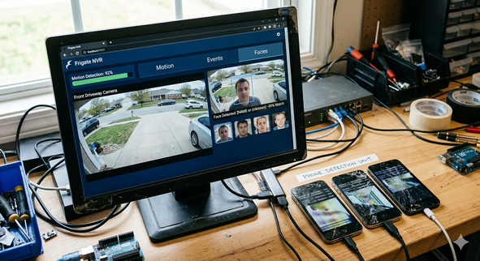
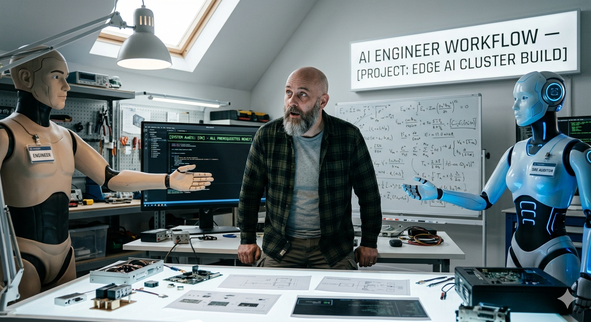

Running Edge AI on Broken Phones: The Multi-Model Engineering Workflow
From a drawer of shattered OnePlus phones to a decentralized YOLOv8 inference cluster — with air-gapped networking paradoxes, hallucinated OpenCL drivers, and the realization that AI is no longer a tool, but an entire engineering department.
The cluster that started it all — three broken phones doing real work.
The Starting Point
I needed to run real-time AI object detection (YOLOv8) for my home security cameras. Frigate handles the core NVR routing, but localized object detection requires dedicated compute. Buying an expensive edge GPU or a Coral TPU for the server felt like an unnecessary capital expenditure.
Instead, I had three old OnePlus smartphones with broken screens collecting dust. Running postmarketOS, these devices possess Snapdragon 845 processors — powerful ARM64 compute sitting completely idle. The goal was to build a decentralized, air-gapped Kubernetes cluster on these recycled devices to intercept Frigate motion alerts via MQTT, run image inference locally on the phones, and publish the results back to the network.
Hiring a Multi-Model Engineering Team
Building an air-gapped Kubernetes environment on repurposed mobile hardware is a nightmare of networking constraints, cross-compilation traps, and missing drivers. Attempting this as a solo developer would take weeks of debugging. Hiring a traditional engineering team to build a custom mobile-edge architecture would require a Systems Architect and a Site Reliability Engineer, costing tens of thousands of dollars.
Instead, I deployed a multi-model AI workflow. I did not use AI as an autocomplete script; I orchestrated different models as a specialized engineering department.

The AI engineering team: Architect proposes, SRE audits, human deploys.
Claude (Opus) acted as the Chief Architect. It conceptualized the
high-level blueprints, drafted the Python inference workers (worker.py), and
wrote the baseline Kubernetes manifests required to deploy the containerized workload to the
ARM64 edge nodes.
Gemini operated as the Lead SRE. It rigorously audited the architectural plans against the harsh physical reality of the cluster. It caught hallucinated dependencies, fixed air-gap proxy routing so the phones could pull images without internet access, and translated high-level concepts into safe, strictly verified bash execution steps.
My role was human-in-the-loop by design. I reviewed the SRE audits, handled the physical hardware, and executed the verified commands. The AI proposed, the AI audited, and the human deployed.
Failures and the Audit Protocol
The brutal truth about large language models is that they operate in a theoretical void. Without an adversarial audit step, they will break your infrastructure.
During the build phase, the Architect hallucinated. It instructed the cross-compilation of
ONNX Runtime from source using an OpenCL Execution Provider (--use_opencl) to
leverage the phones' Adreno GPUs. The SRE auditor caught it immediately: ONNX Runtime does
not have a native OpenCL Execution Provider in the mainline repository. The entire
compilation strategy was based on fictitious documentation.
Gemini halted the execution, purged the failed namespace, and pivoted the architecture to a pre-compiled CPU provider that successfully initialized.
Later, the Architect attempted to execute validation commands via interactive SSH using
sudo. The SRE rejected the plan again, recognizing that the edge nodes use
doas and lack a pseudo-terminal for password entry over automated SSH streams.
This internal friction is the feature.
┌──────────────┐ Proposes Plan ┌───────────────┐
│ Architect │ ►►►►►►►►►►►►►►►►► │ Lead SRE │
│ (Opus) │ Audits Plan │ (Gemini) │
└──────────────┘ ◄◄◄◄◄◄◄◄◄◄◄◄◄◄◄◄◄ └───────────────┘
│
▼
┌───────────────┐
│ Human Exec │
└───────────────┘The Payoff
The system is fully operational. When a camera detects motion, Frigate publishes an event. A recycled phone intercepts the MQTT payload, fetches the specific frame snapshot via the local API, runs the YOLOv8 model locally on the Snapdragon chip, and broadcasts the detection result back to the smart home in milliseconds.
The hardware cost was zero. By recycling existing components, I avoided generating e-waste. The software cost is limited to the minimal monthly API subscriptions for the frontier AI models. In a single afternoon, this trio built enterprise-grade edge AI infrastructure for pennies, proving that the future of engineering is orchestrating AI agents to execute the impossible.
Cluster Context
This runs on the same k3s cluster described in previous posts — an x86_64 laptop as the control plane and three OnePlus smartphones running postmarketOS as ARM64 workers, connected via USB ethernet.
| Node | Role | Arch | Hardware |
|---|---|---|---|
| k3master | Control plane + Frigate | amd64 | x86_64 laptop (headless) |
| one6t | Worker | arm64 | OnePlus 6T (Snapdragon 845, 6GB) |
| one62 | Worker | arm64 | OnePlus 6 (Snapdragon 845, 8GB) |
| one61 | Worker | arm64 | OnePlus 6 (Snapdragon 845, 8GB) |
Previous posts: Running Frigate NVR on Kubernetes · The Kubernetes Sidecar Pattern · Building the phone cluster · Running Ollama locally